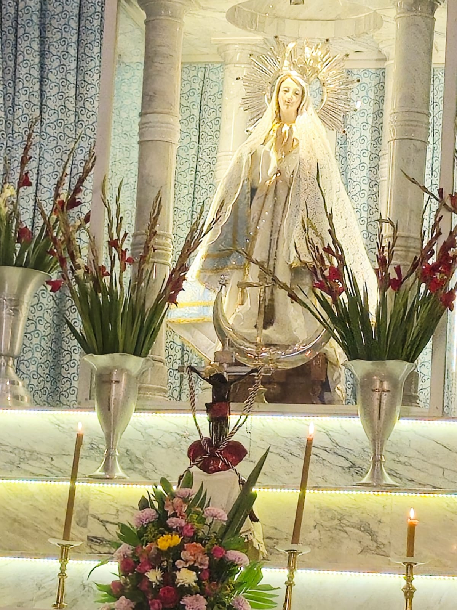
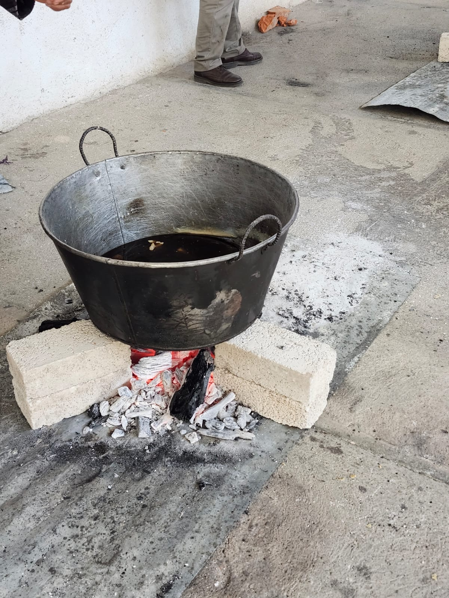
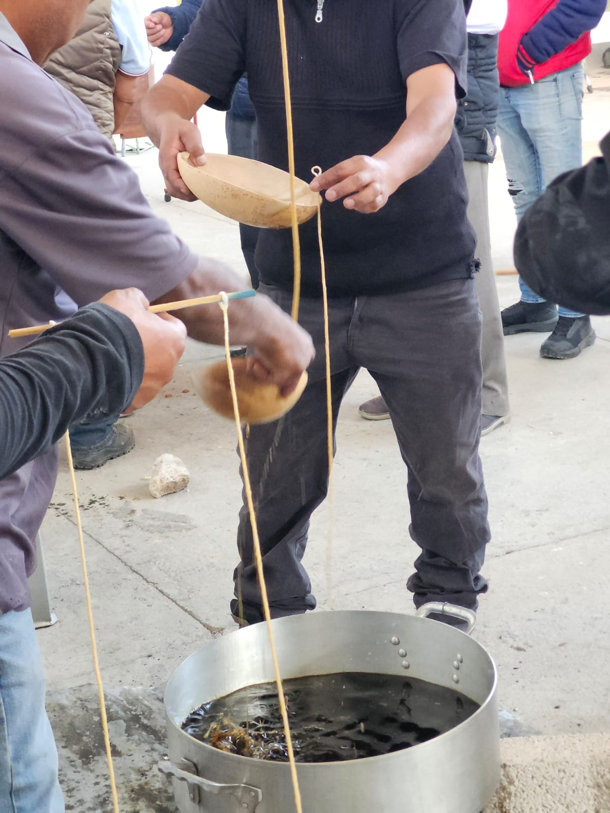

Es una comunidad que se rige bajo los usos y costumbres, con datos de INEGI en ultimo censo poblacional se registraron 111 habitantes. La maxima autoridad en la comunidad es la asamblea, y sus principales organos administrativos son la autoridad civil que atiende en la agencia municipal y la autoridad agraria la cual atiende en las oficinas del comisariado de bienes comunales. Las dos imagenes religiosas que veneran son: La purisima Concepcion de maria la cual es celebrada el dia 8 de diciembre y el Dulce nombre de Jesús el cual es celebrado el ultimo domingo de enero.


